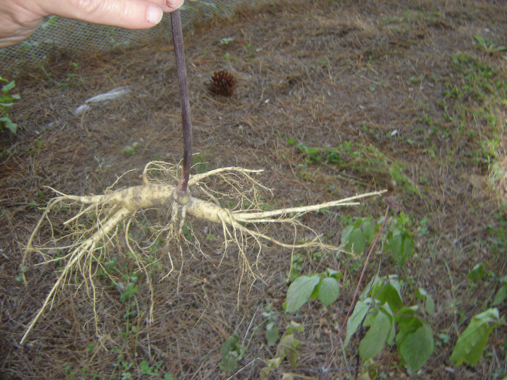

 While this slow growing plant was developing there were many questions about the Chinese market. Helped by their Chinese contacts the team visited the traditional growing areas of Northern China where valuable lessons were learnt about how to maximise each wild ginseng plants value including how to wash, dry and present it. The ginseng experts in Fusong also explained why New Zealand grown ginseng grew faster than in the traditional ginseng growing areas in Northern China.